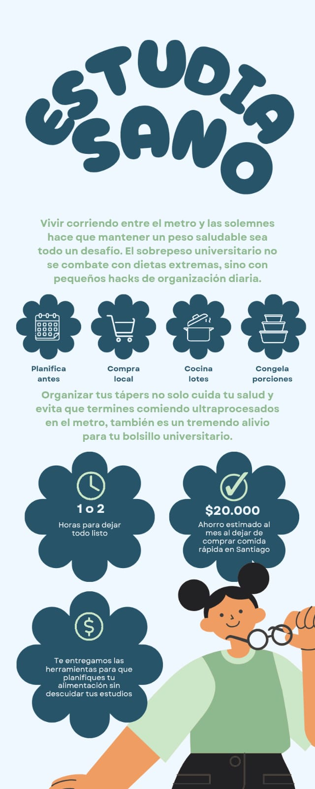

📚 Infografía
Estudia Sano: come mejor, rinde más
Mantener una alimentación saludable siendo universitario es posible. Esta infografía te muestra hacks prácticos de organización diaria para comer bien sin sacrificar tiempo ni presupuesto, y así rendir mejor en tus estudios.
🖼️ Infografía
Estudia Sano
Guía visual con los principales consejos para organizar tu alimentación universitaria sin sacrificar tiempo ni presupuesto.

🎬 Video educativo
Tips en acción
Contenido audiovisual corto con tips rápidos para comer sano en tu día a día como estudiante universitario.